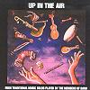

Celtic Lyrics Corner > Artists & Groups > Danú > Up In The Air
|  |
Up In The Air
(2004) |
| Tracks : |
1. The Moving Cloud/Ril Gan Ainm
2. Mooneys Minuet/The Graf Spay/The Long Strand 3. The Stone In The Field/The Walls Of Liscarroll 4. Raghadsa's Mo Cheaití 5. Taimse Im'Chodhladh 6. The Jiggedy Jiggedy Highland/Francie Dearg's Highland/Miss Ramsey's 7. Slip Jig/Jig Gan Ainm 8. The PowerOut/The Dublin Reel 9. Spike Island Lasses/Toss The Feathers 10. Reel in D/Mary Bergins 11. Kellys Mountain/Liam Archie Reel 12. Molly Na gCuach Ní Chuilleanáin 13. King Of The Fairies/The New Policeman/The Langstrom Pony 14. Seán Ó Duibhir A' Ghleanna 15. The Girl From The Big House/Liam O'Flynns 16. Slip Jig/The Humours Of Glendart 17. Welcome Home Grainne 18. Seán Sa Cheo/John Dohertys/The Highland Man Kissed His Granny |